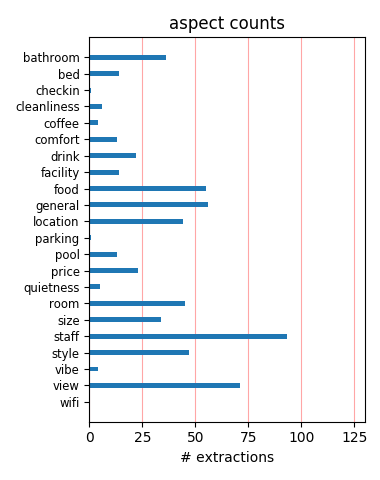
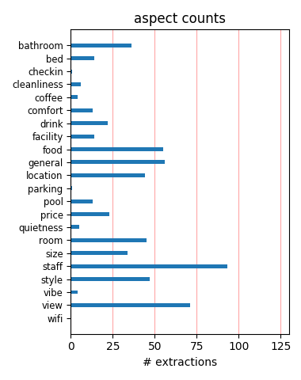

fabulous hotel, fantastic staff Perfect location, fabulous decor, friendly staff. Went to the spa and was pampered. Lunch at Asiate was excellent. Book a river view room for excellent views. Bathrooms are super luxurious. Highly recommend. I would definitely stay there again!!!
Top of the town Long weekend in New York, for me and the family, this place was great. The views from the room of the East side where great, the kids loved it. The bar was great for views of central park and the stars that come in for a drink.Its a great hotel and great location.
Great views POOR service. We did not stay at the hotel , however had lunch. The view is fantastic, the crowd pleasant to study.The service was TERRIBLE TERRIBLE TERRIBLE. Waiters rude and in the end complaning about the lack of sufficient tips....... i will NEVER step ito that place again.
Great Stay here every time we visit New York Best Bits: Location, great bar, stylish rooms, close to fab shops in Columbus Circle, Loved the gym poolDown side: Staff can be a bit distant, room service prices are the highest I have ever known, make sure you book a room overlooking Central Park
Mandarin Oriental - Absolutely Perfect!!!!!! What can I say?? Everything at the Mandarin Oriental Hotel in New York was perfect - the staff was so accommodating, helpful and courteous. The room was beautiful - the hotel lobby bar marvelous!!! I did not want to go home. I cannot wait to stay there again.
great hotel Stayed here for 2 nights - upgraded us to a one bedroom suite - first time I've ever been in a hotel room with hardwood floors!Had a view uptown, towards the GWB, saw Central Park off to the side.Everything was great - (it should be - you pay for it!) - it's not cheap, but great for a wonderful weekend.
Superb hotel First time staying at a Mandarin anywhere. Usually stay at Four Seasons, but as this was unavailable, decided to try the Mandarin. Nice room, very clean, excellent service, great view, great location, and nice bar. They don't have all the employees remember and call you by your name when they see you ( a la Four Seasons), but other than that, it's top notch.
A Satisfying Experience Being a self-made millionaire, through investments and other means, I am accustomed to fine hotels. This one was a typical classy hotel. I was attending a meeting in NYC with some investor, millionaire friends of mine and stayed at one of the most luxurious rooms here. It was spot-on. The bar was a great place to meet others who have achieved success. I give it a B+.
The best in NYC Second stay at the Mandarin Oriental. First stay was in a Central Park view suite. This time in a Central Park deluxe room. everything remains excellent with excellent amenities.Actually, this is certainly the best hotel in New York from the bellmen staff to the spa, the restaurants, the concierge and even the whole security. Yes, it has a cost and location is not the best, but it worth the value.
Service was horrible Stay away from this Hotel.VERY BAD service - Don't mind paying $1200 for a room but expect a level of service for that rate.Waiting 15 min outside the airport for the car from the hotel to arrive.Breakfast from room service arriving without cutlery - food cold when it did arrive.Next morning - room service over one hour tweenty minutes to arrive.Not what I would expect from Mandarin Oriental.
Really Nice. Suprising Service Flaws A nice hotel. Have used this group on other continents. This trip exposes some subtle flaws. Coffee ordered this morning at 9 am took almost 1 hour to arrive. Bathroom amenities are shabbily arranged. Complimentary city maps and other offerings are torn and incomplete.All would be acceptable at a property charging a much lower price.Mandarin ought look at their local management for answers.
You Would Not Want to Leave IT! King size bed with central park view at US$699/night. Flawless service and execution, great atmosphere, mighty bar with views, excellent food, good spa, location at Columbus Circle, baby sitter for our 2 year old arranged at 3 hour notice.... The list can go on and on. I have travelled the world and stayed at some best hotels, including Peninsula in NY and Shangri La in Singapore, but this one left a special mark. look no further and enjoy!
Best Ever I stayed here for my 21st birthday for 4 nights and it was the best ever! At check-in we got a room upgrade to a corner room on the top floor over looking the Hudson River - amazing! I also arrived to a lovely little cake and small bottle of champagne which was great!I have stayed in New York before but this just exceeded my expectations. Would definately stay there next time I visit.Beautiful hotel, excellent room views and great location. What more could you want!!
Great location, small room, not great value A great location, good service (through not up to the normally high standards of other Mandarin Oriental hotels), Very small room for the price (though well laid out- Room fine for one person would have been too small for two and was supposedly an executive suite?) Felt the room was too expencive for what it was Much better values elsewhere in New York. Would only stay here again if I needed to be close to Lincoln Center and was on a tight schedule
Nice but no Four Seaons I agree with the previous post. This is a beautiful hotel and the views are spectacular. But at this price I would prefer to stay at the Four Seasons. The MO has much smaller rooms and to me is a little too hip. Plus the service is not nearly as good as the Four Seasons. The bar was cool but we had to wait 30 minutes to get in even as a guest of the hotel. I'm gald that we stayed and were able to enjoy a breathtaking view of the city for a night but won't stay there again.
A Disgrace to the name Mandarin Oriental This hotel does not belong in the Mandarin Oriental Group.The rooms may be beautiful but one needs more from a hotel.The service is a disgrace. The management are totallly disinterested and disingenuous. Letters are simply ignored.Beware on prices this hotel has so many different rates for the same category accommodation even the staff do not know what to charge!It would be a disaster to stay here. In a city filled with top class hotels you do not need to go here.
Service was ok but disgusting room This was our 3rd stay a t the Mandarin Oriental and we could not believe the condition of the rooms, the sofa chairs and cushion covers within our room where so dirty and stained you would have thought they had been dragged through the park. The sofas where changed after we complained but they should never allow a room to be occupied in this condition. The staff at the hotel we polite and always friendly, but they have real maintenance issues which need to be resolved quickly.
loved it all We just returned, and I loved this hotel. We had a room on the 50th floor, excellent view. They brought us complimentary tea. We loved the gym and lap pool. The food and service were great. Since the hotel is next door to the Time Warner shops, we went to Whole Foods for more great food. The hotel supplies you with Fiji water everywhere. Nice because those annoying mini bars are so expensive for water. This was the first time I ever stayed in NYC and could not hear the traffic below..Would return again.
Could be ok, but isn't in the end Stayed there for 5 nights - maybe one of the last with central park view: there's another skyscraper growing taking the sight!Room was modern and comfy, service was fivestar.A bad surprise was the airport-transportation service. The ordered Mercedes was $180, they wanted to charge $250. At checkout they told us they will clear it before booking the creditcard with the extra $70. 2 weeks later they charged the creditcard with the 70 bucks without asking! So be careful when booking with them.
my favorite hotel in NY Mandarin Oriental NY was quite new when we stayed here. I loved its modern architecture, the decoration and the great location. Combination of everything that hotel presents made me feel very good about this hotel. Our room had a great NY view, it was very cleverly and beautifully designed. Both my husband and I enjoyed our three days stay at this hotel very much and looking forward to another opportunity to stay there. As we live in NY now, unfortunately we may not have the opportunity anytime soon.
compelling hotel I have stayed at the Mandarin many times since it opened, and my recent visit confirmed my affection for it. Major positives include: a great, apparently stable staff; amazing views, wonderful location and great facilities such as the pool/spa and cool lobby lounge. The hotel is very expensive due to persistently high occupancy, and the food is not very special. Skip room service and head to Cafe Gray (or Nougatine across the street) which have extensive hours. Even the bar there is a glamorous dining experience.
An enjoyable experience First off, I loved the hotel and found my stay to be a truly pleasant experience. Yes the rooms are a bit small and the prices are exorbitant. But it's New York. If you want cheap, go to Cleveland. But I must say to Extremely Disappointed--it's not really fair of you to give such a negative review based on a 5-minute encounter with one doorman at a hotel at which you didn't even stay. Next time offer a tip to the doorman when you ask for a taxi. It's customary and expected--especially if you're not a paying guest of the hotel.
Wonderful suites We stayed in a suite on the 53rd floor and had views over the Hudson and of Central Park.Upon our arrival we were treated extremely well, and I agree with a previous writer that the Concierge are fantastic.We had a champagne reception for 23 guests in the Lobby lounge on the day of our wedding and were given our our private area for our guests to mingle, and the use of the foyer for numerous photo'sFrom start to finish we were taken aback by the way we were treated and will definitely return.If you have the money we highly recommend the hotel.
Lovely but could be better. My husband and I stayed at the Mandarin Orient in Columbus Circle in December. The hotel is lovely. However, a few glitches decreased our satisfaction. The hotel lost our reservation but was able to accomodate us. The bath tub didn't work! A serviceman spent an hour in our room trying to fix it and never could. The hotel didn't even offer to reduce the rate or send an apologetic fruit basket. If you are a shopper, the adjacent mall is nice. I would probably not stay here again, there are too many nice hotels in NY with working tubs.
Fantastic!! Absolutly fantastic hotel in perfect location,we stayed in a Deluxe Hudson River view on the 47 floor with view overlooking the west of Manhattan and Hudson River.We stayed for 4 nights and enjoyed every minute of our stay.The rooms are huge and the bathrooms amazing,huge marble shower with rainforest shower head certainly wakes you up in the morning.We used the gym and pool which were great and The Lobby Lounge is a great place for drinks and food with the most amazing view of Central Park.All the staff were very friendly and we can't wait to stay there again.
#45?? OK, so how is this hotel the 45th best hotel in NYC? You can argue over what is #1 and the Mandarin Oriental will always be in that conversation.The staff is impecable and attentive. I had lost some luggage on the flight from LAX and the concierge made sure American had it and got it to me promptly, I didn't need to do a thing.My room had an amazing view of Central Park and the meal at Asiate is as good as I have had in NY. YES, the property is pricey, but what in Manhattan isn't?For a business trip, especially on business with Time Warner, this place is hard to beat.
Truly the best hotel in NYC. I've stayed at many luxury hotels both in NYC and around the world including the luxury masterpiece Burj Al Arab in Dubai.The Mandarin Oriental is superb. Above and beyond style and accessibility, the most important factor in considering the rating of a property is SERVICE.The service at the Mandarin is Superb. One of the best only rivaled by my time spent at the Four Seasons.If you're going to NYC, do NYC right, and stay at the Mandarin, where your every whim is addressed and you can focus on only your task at hand whether it be pure pleasure or business.
Very good, but not exceptional I'm writing this review whilst actually in my room at the Mandarin Oriental. I think it's better that way.Yes, the room is lovely, and yes, the staff are polite.However, having booked for 3 guests over 4 months ago, it has taken 6 hours, 4 phone calls, 1 visit to reception a lot of angriness to get a rollaway bed delivered for my son.You can have all of the orchids in the world, 100 TV channels and the fluffiest robes, but what does the inability to provide anough beds tell you?Around $800/night ought to provide flawless service. I Shan't stay here again.
Loved it, but over priced. An absolutely stunning hotel, with excellent touches free teas/coffees/fruit from the gym, the evening turn down, the ipods to listen to excellent stuff indeed BUT it is vastly overpriced. The central park view rooms have 2 buildings in the way highly frustration when a 2 night stay cost nearly 拢1000, and the fact that breakfast is not included and is incredibly expensive takes away from the incredibly location and general feel of the hotel. I loved my stay but wouldn't go back unless is was a lot cheaper. There are better places to stay for a lot less money.
All the right touches This beats all three of the Ritz Carlton hotels I've stayed in. The service is just what you need; no more no less, and highly personalized. I donned the complimentary bathrobe and reclined in the divan adjoining the the picture window. The room overlooked Central Park from the 51st floor.Had an amazing sleep on the Sealy Posturepedic 700 featherbed with down pillows. The dimmer switch for the bathroom is a nice way to wake up.Took a luxurious shower underneath the waterfall showerhead. Preparing for a business meeting in the morning, I wondered how I looked and then noticed the 10' X 3' window next to the bed.
Wonderful Hotel, Great Service We have been staying at the Mandarin Oriental NYC since they opened, and it is still just as fantastic as the day it opened. From the moment you arrive everything is perfect, and they will cater to your every need(s). We stayed in a suite overlooking Central Park which was amazing. The rooms are larger then any we have stayed at in NYC, and they have double sinks in every room which makes mornings much easier. The lobby bar/lounge serves great snacks and cocktails throughout the day and at night it is reserved for hotel guests only. It is very expensive, but definitely worth it if you want a first class experience all the way.
Good with kids Just spent weekend at Mandarin with 2 children: 5 and 8. The hotel worked well for a luxury property and children. They gave children wonderful welcome gifts. The kids loved the views. The indoor pool was a big plus. Also important was that the hotel is connected to the New Time Warner Center and in inclement weather, could stay inside and visit Borders book store and even better, get food and snacks from the Whole Foods store inside. The staff always said hello to the boys by name and always asked them for a high five which they loved. Also, the kids said the chicken fingers were the best.As for adults, lovely, nice food and great views.Very pleased.
Great Hotel, Great Location We just recently stayed at the Mandarin Oriental for three nights. My best advice is to book as far in advance as possible to secure a decent rate. I got a Hudson View Room on the 38th floor for 429.00 per night and it was a great value. The room was small but the amenities and ambiance made up for it. The bathroom was fantastic with the rainshower shower a real treat. The shower was one of the largest I have ever seen. Above all the hotel was very quiet and spotlessly clean. I will only stay at this hotel in New York in the future. The lobby is very nice with the wonderful views of Central Park. Staff were very professional and unobtrusive.
So good, it's one of the top hotels in America I travel on business all the time, and I see lots of hotel aspiring to greatness. It comes down to this, MONY has the most wonderful, accommodating, gracious staff imaginable. No offense to a great city, but NY is not always known for fabulous service. This staff outshines every hotel I have ever seen. It's not perfect. The Lounge Manager was downright rude. But that was one person and one day. The rooms have goodies and gizmos in every nook and cranny...in fact too many...the TV is difficult to use. But again, that sense of calm, the utter professionalism, the attention to detail. It was worth the extreme price and I will stay any time I have the opportunity.
Confirmed: Top pick Stayed for the second time within a 2 months time frame. This time, I booked a standard room. Upon arriving, was welcomed very heartly and got a better room, at the 54th level. The view of the Hudson River out of my bath tub was amazing.Breakfast was fresh and tasty, the pool is a must see/must do. The bed is heavenly, the entertainment system in the room is unique. Turn down service is great with little attentions like cards with wise words on them. But also cookies and a big bottle of Fiji water. The concierge services are top.Last time I was in the elevator with William Shatner, this time in front was P. Daddy. Once again, a 9.5/10 and if you can book a promotional rate or package, go for it.
beautiful hotel!!! We stayed 4 nights at the Mandarin in a Grand Deluxe Room, the room was just beautiful and the view spectacular. The highlight was the Rain Shower, it will put you right to sleep at night. The bath tub was also a delight with a view window from the room as well and the beds are so soooo comfortable. We ordered room service our first night and it was quite yummy. My friend mentioned it was her birthday and that day we had the most amazing cake sent up to the room. Service was over the top and we did have a couple of Celebrity sightings getting on the elevators. The lobby is to die for, make sure you go and have a night cap in the lobby bar.I am already planning for might return trip in June next year.
Great Hotel ! We stayed at this hotel whilst on honeymoon, it was fantastic!Our hotel room was one of the more basic type due to the cost but it was still lovely. We arrived late at night to a bottle of champagne and chocolate cake, slippers by our bed and fluffy robes in the bathroom. The bed was incredibly comfy and the view out of the window stunning. The bathroom had a huge shower cubicle, a lovely deep bath and a tv.Whilst visiting, my daughter was ill, the cleaner came straight away and the hotel sent my daughter a complimentary bag, hat and t-shirt to cheer her up. The staff were very nice but professional.The hotel pool and facilities are excellent.It was a delight getting married in NY and staying in this hotel.
Nice views, absurd prices Unfortunately, as it develops its brand, Mandarin Oriental doesn't seem able to produce hotels that come anywhere near the charm of the original Oriental in Bangkok. Their New York hotel is a case in point. Arriving, no one bothered to accompany us to the lifts that go to reception on the 35th floor and we weren't escorted to our room either. Worst of all, this place is very, very noisy, with awful vibrating sounds coming from the lifts and party noise from other rooms and reception areas. Staff have a nose-in-the-air attitude and prices for all services are too high even by New York standards. With hotels like the Caryle and the Four Seasons to chose from, this place had better pull up its socks.
Absolutely Incredible! We (my wife and I) wanted to celebrate an anniversary, and figured that we would drop a little extra coin and stay at the MO NYC. From the minute we arrived nothing but service and style. I arranged for some fresh flowers to be in the room (peonies and chocolate cymbidium orchids) utilized the concierge for some great dining advice! We stayed in a suite with an awesome view of central park, and used the location to walk to shopping, dinner, and even over to times square to people watch (should have skipped that -- crazy and dirty). We took the D train uptown for the Yankees game, and a quick cab to the meat packing district for dinner (10 minutes) at Vento. The location is great and the room is spectacular.
Great views We stayed one night at the hotel, the room was small and we had payed extra for a park view. On checking in we where shown to a partial park view and had to argue with the check in desk to be moves(not a good start). It turns out that all park views are mostly parital views and an expensive option to go for. Room service breakfast was good but small in portions we had the continental and by NY standards it left us hungry.Lunch at Asiate was nice and the food tasty. The hotels best service had to be the concierge they bend over backwards and really do all they can. Spa was nice but expensive.We will stay again but go for a suite as we where fed up of tripping over out cases in the room to quote not enough room to swing a cat!!!
Loved, loved, loved the hotel I've been to a number of Mandarin hotels all over, but I found the one in New York to be quite extraordinary. The room is spacious enough, especially for a New York hotel room, the hotel rate is also affordable enough for a 5 star hotel in New York, and the service is just amazing. If you requested it, you could end up having a wonderful view of the Central Park and watching the sun set over it was truly amazing.The only problem I had was with the door lock ( I stayed there in 2004, so they might have corrected this problem since). If you have bolted the door from inside, an outsider can easily force the door open and twice to yank the bolt from its place. We have told this to the manager.Summary: great stay!
Wonderful Anniversary Stay Just stayed at the Manadarin this past weekend. We celebrated our 25th Wedding Anniversary and the staff at the hotel created an exceptional expericance. From the moment we were greeted by the doorman to the moment he said goodbye on our last day, we were catered to as royalty. The staff was pleasent. caring and very accomadating. the location is the best in Manhattan, the hotel was beautifull. Very well organized , situated and very classy. The rooms were fabulous, we stayed in the Hudson River View room,, everything from bathroom, bedding to view was perfect, just like images on theweb site. The Lobby Bar was a great relaxing spot after our dinner theatre evening.All staff were excellent and the class service was the tops.
Way overpriced for the lack of service I am a big fan of the Four Seasons in new york. I tried to get a room for NYE weekend and it was sold out. I am currently staying at the Mandarin Oriental and it is very disapointing.They didn't have my room ready for 3pm check in, had a rollaway in the room that I didn't request. Takes forever to get something to your room.Also they send me a customer profile to fill out and send to them. I filled it out and sent it back to them, but I didn't notice that they read it at all...I am in the travel biz and I don't mind paying big $$$ for hotel rooms around the world. The problem that I have is when you pay top dollar and you receive service on the same level when you could have spent $400 a night.I won't be coming back
Nice views but off centre The hotel offers the usual Mandarin Oriental high standards found throughout this chain but in addition it offers wonderful views across Central Park (albeit they are not uninterupted!). Didnt manage to make breakfast. Rooms service was good although clearing trays from the room took hours. What was uncomfortable about the hotel is the distance from 5th Avenue. Yes you are closer to the theatres and you have shopping dining options downstairs (the hotel is on the higher levels of a Columbus Circle building) but its a stroll to 5th a stroll back with shopping bags. The Ritz and Plaza beat it for location though. The bar is though a great place to meet enjoy the views. What is also unusual is that the hotel 'starts' with its lobby on the 35th floor.
Gorgeous hotel ! We've just returned home from a one week stay in this fabulous hotel and I honestly cannot find anything negative to say about the experience. We had a deluxe Hudson River view room that interconnected with our 2 teenagers. The views were superb, the room immaculately clean and the facilities wonderful. There was also a plentiful supply of bathroom goodies by Aromatherapy Associates which smelt heavenly - I'm going to try and get my hands on some in the UK as I forgot to buy them at the hotel shop. The location is brilliant - a 10 minute walk to Times Square and right next to Central Park. This hotel was an oasis of calm and luxury that we enjoyed returning to after each hectic day of sightseeing. I couldn't bear to stay anywhere else if I return to New York !
Simply Lovely Stayed here for New Years and had an amazingly romantic stay. Booked a room with a tub with view of city. I am not into taking baths but with that view and room service of some champagne and chocolate covered strawberries was worth it. The pool room is nothing exciting but the spa is def worth visiting. I had the massage which was ok but the best part of the spa experience was steam room and lounge which has amazing views of the park and city. The bed was soooo comfortable. Of course the rooms are on the smaller side but thats what you get for nyc. But even though the room was small it had everything you would need from a top hotel. If you are visiting nyc the location is great especially during the holidays. The hotel restaurants and bar are worth going to as well.
Stay away from the spa I booked two rooms for myself and three of my girlfriends over a weekend. I asked for early check-ins but received one regular check-in and one very late check-in (4:30 pm). The rooms were fine but had obstructed views (Hudson River) even though I booked higher elevation rooms for a better view. The room was quite small as was the bathroom in comparison to the Four Seasons New York. We all had massages in their spa which was a very disappointing experience. The masseuse was late, there was no tour, overhead music problems, and no bed available for the rest area following the massage (and I spent over $1300 for the massages). The massage which lasted two hours was alright but not great. I would save my money and stay somewhere else or opt for the Four Seasons New York.
The Best Hotel in NYC Fabulous, Fabulous, Fabulous! It may be expensive, but offers great service, immaculate rooms and breathtaking views of the Hudson and Central Park. We stayed in a Hudson view room (Floor 54), which was spacious and very quiet. The bathtub next to the window had an amazing view and the room was generally well serviced.Try and avoid rooms near the elevators though. They are in constant use and I'm sure the noise would annoy light sleepers. Luckily we were nowhere near them!The shopping mall below the hotel is also great. If you don't want to pay $35 each for breakfast in the hotel, you can wander down to 'Borders' where you can get a fab Dean and Deluca coffee and muffin!The most beautiful view of Central Park is from the hotel bar at sunset.Treat yourself and a have a great time!
Magical Mandarin The street level entrance does not prepare you for the sight you experience when you reach the small but spectacular lobby with views over Central Park.Choose a room on the highest floor you can get; you will be rewarded with breathtaking views over the Park, City or Hudson. We stayed in a Hudson Deluxe River View Room; the room is beautifully appointed but at 450 square feet is small in comparison with rooms at a similar price ($800) in , say, the Ritz Carlton or the Four Seasons.The bathroom, overlooking the River , is rather lovely.Breakfast in Asiate was a treat. Choose the Mandarin for the charm of the staff and the bedroom decor but above all for the magical views in every direction.The trilogy of the Ritz Carlton, Four Seasons and Mandarin Oriental ; who needs a better excuse to visit NYC?
New York state of mind Had hesitations about staying at the Mandarin Oriental after reading some of the lukewarm reviews. But stayed there in July for 5 nights, booked 2 Central Park suites and 2 Deluxe rooms. Our group of 8 all found the service, accommodations and the location outstanding. Stunning decor, exceptional friendly service, especially since we had a few preteens and teens in tow. Perfect location above Columbus Circle shops wth access to Whole Foods, restaurants, bakeries, book stores etc. The hotel provided complimentary full English breakfasts every day and we found the service exceptionally attentive. We have stayed at many of the top resorts in the world that have been recommended by Cond茅 Naste, in Europe, Asia, French Polynesia etc. and we would definitely count the Mandarin Oriental as a great hotel.
Great facilities - but service lacklustre Good things about this property - unlike most of the luxury hotels in NYC, the facilities are new, and the rooms are not tired. Because of the location of the hotel, the entire hotel is quiet - no real street noise. Bathrooms are great.Bad things - it is very expensive, and the service is simply not up to snuff for the type of property it pretends to be. Get ready for clumsy checkin, botched reservations (in the hotel's own restaurants ?) and generally blah service (even worse that what you would normally expect for high end NYC hotels). I've now stayed here a few times, and on each occasion, the experience has been the same. So, caveat emptor - you will pay dearly for a beautiful room, but if you are expecting service commensurate with the facilities, you will be disappointed - for that, try the FS instead.
Amongst the very best in NY They certainly aren't the largest rooms in Manhattan but the hotel just felt very New York to me-- quintessentially so, overlooking the park, in the upper floors of a slick (but perhaps soulless) skyscraper. The modern rooms (probably amongst the newest in the city?) are slick and far superior to the competitors like Four Seasons, although not as large. The location is good with excellent access throughout the city, but aside from the park, you don't have as much immediacy as being on Fifth Avenue or in the heart of SoHo Stunning lobby with views of Central Park. Like most other Mandarin Orientals, the service is extremely professional although it can be a little cold at times (especially with all that marble). The prix fixe lunch at Asiate is a very reasonable deal as well-- not outstanding food, but well worth the price.
Very nice but pricey I just came back from spending 2 nights at the Mandarin Oriental. I only stayed there because it was a last minute trip and there weren't any other 5 star hotels with a decent price. So I decided to splurge and stay at the Mandarin. When the doorman was present, they always opened the door and greeted me everytime. Most of the staff were friendly and always acknowledge me. I only had breakfast at the hotel and the waiter was pretty nice. I had a room with a Central Park and the city view. The only thing that was not so nice was that the Trump Tower was front of it. The room and the bathroom was a decent size and I really enjoyed having the plasma TV in the room and in the bathroom as well. All my room service and turn down service was down on time. I would like to stay here again but the price is just way above most of 5 star hotel in the area.
Excellent experience Overall. I stayed at this hotel to try this hotel out. The indoor pool is a great size. The gym is a little on the small side, but well equipt. The service since I arrived has been amazing. The hotel is spotless and clean. The staff is excellent. The spa treatments I received were good, but not great. Hotel spas are always super expensive, but thought I would try a facial and a massage. The massage is great and the facial was a 7 on a scale of 1 to 10. The best waiting area and spa water ever. The room was very small with too many chairs. I had to take the extra chairs out of my room. The bathroom was very nice and the shower was excellent. The room overall, besides the over crowding of the furniture, excellent and clean. The bed was comfortable, and the sheets were very soft. If you are lucky, you will see a couple of famous faces in the lobby. The food was good. I would stay again.
Engagement Last weekend, I proposed to my girlfriend and we stayed two nights at the Mandarin Oriental. This is by far the best hotel we have stayed in New York. We received a complimentary upgrade and all the staff were absolutely perfect. I was considering other hotels where I have previously stayed including the Four Seasons, Waldorf Astoria, the Meridien, the Hudson or Alex and am absolutely delighted to have decided on the Mandarin Oriental. It is expensive but they do have special weekend offers and for such an occasion really lived up to expectations. I could not fault the hotel or staff in any way as it made this day very special. I think we will be coming back here for our important anniversaries. Absolutely worth spending a bit more to stay in a very special place with magnificient views and bedrooms, complete peace of mind in a relaxing setting and get what is probably the best service in New York.
Service with a snarl Date: November 14, 2008I have stayed at the Mandarin Oriental in New York previously and had a pleasant stay. This time, however, is typified by the attitude of the Maitre D at the cocktail lounge. We asked for seats and were told, with an arrogant and superior demeanor, that it would be a twenty to twenty-five minute wait. This despite many tables being obviously vacant. We were told we could wait at the bar, which we did. Thirty minutes later the Maitre D having never come for us, I approached him again and was told I would still have to wait. Again, many tables were open. Finally an hour later, after never having heard from the Maitre D, we left. We noted again that most of the tables in the lounge were still vacant. The attitude of the staff was that we were lucky to be there. With these prices and the economy what it is, if they continue with this attitude it is they who will be lucky to be there.
Very average experience / Very high prices Okay, the location of New York's Mandarin Oriental is fabulous (although, as other travelers have mentioned, the Trump Hotel is blocking the views from some floors).Okay, the rooms are relatively spacious (by New York standards) in the most expensive rooms.Okay, the design is great, the pool and the gym are nice.But that's about it.Overall, the atmosphere is very international / standard / impersonal. As a guest, I did not feel particularly welcome or valued (although I was arriving, announced in advance, with the rather expensive hotel limo). The product may be good and the staff may be professional, but this is not a place where I felt genuinely welcomed.For the prices charged, significant improvement is needed in that respect.I mentioned it to the customer relations service, but received no answer to my email. I will not stay there again, unless I am sure these issues have been fixed.
Outrageous Price, Standard Service While the hotel is nice, it is VERY VERY overpriced. The service was nothing that would justify such high room rates, I would expect much more attentive staff for that rate. Im sorry, but for $595 a night I would expect a HUGE ROOM and LOTS OF AMENITIES. Instead I got a small room on the 45th floor, with a spectacular view, and lots of amenities. A view, flat screen TV, bedside controls, and seperate shower/tub in the bathtroom are not enough for the hotel to charge $595. The room was WAY to small for that price. I would say my room was in the neighborhood of 400 squarefeet. I would say rooms at this hotel are worth AT most $450 a night, if you are paying more than that, stay at the Four Seasons or ST REGIS hotel. Also I was talking to a a man in the elevator who said he booked an Expedia rate of $429 a night, and he said his room was overpriced, I would hate to see how small his room was!! LOL...
Very expensive, very nice My husband and I stayed at the Mandarin for four days in early December. We found the hotel to be well-located, the staff kind and efficient, the decor pleasing, and the views spectacular. Yes, it was expensive, even outrageously expensive, but we've paid nearly as much elsewhere and not received the same value for the dollar spent. Our room, while not large, was immaculate and very comfortable. The view out the window was amazing and better yet, we heard absolutely no noise from outside. We thought it was a nice touch that the maitre d' in the lounge reserves tables for hotel guests so that even if the bar is packed, there's a table waiting for you. The air is a bit thick with the smell of money and celebrities (we saw Bono there) but we felt we were being treated just as well. I wished we could have stayed longer, and I would definitely go back. The Mandarin came to feel very much like home during the time we were there.
The Lobby Lounge I just came back from a 3-day weekend in NYC with mom. We didn't stay at the Mandarin but decided to walk over to Columbus to check it out after seeing the beautiful pictures and hearing so much about it. Arriving at the 35th floor, I was amazed at how beautiful the place was so we decided to sit down and enjoy a cup of tea and dessert at the Lobby Lounge. We were seated right next to the window and I can't even express how priceless the view was. Dessert was amazing and the staff was so inviting. It was pricey but worth absolutely every penny. This isn't a hotel review but I was so amazed with the experience I had and if you have the time you should really go and try it. You will love the detail that they put into everything. It was a view and dining experience like no other...,very intimate and relaxing. So even if you dont have the money you can still experience what the hotel has to offer to the people that walk through its doors.
Sublime Hotel Me and my wife stayed at the Mandarin for our honeymoon in April. What can I say apart from it is fantastic. We stayed in the central park suite on the 46th floor and had a great view overlooking central park and the hudson river. For $2300 a night you would expect a slightly bigger room, but this is NY and space is limited, but we werent disappointed. I had read some reviews saying some of the rooms looked worn, but ours looked fine. It was modern with a flat screen tv is every room including the bathroom. There was plenty of wardrobe space and the bed was extremely comfortable. The service was great and the food was worth every penny. The breakfast is very expensive but I had gone for the BB option when booking which is advisable. The gym is adequate but would you want anymore while on holiday. All in all, I could not fault the Mandarin and they made our honeymoon even better espeically with touches like free champagne, cakes and chocolates.
Luxury Hotel next to Central Park with arrogant staff! American hotel staff is usually better than in Europe. very well trained and very friendly. Not as good as Asia though. In the Mandarin Oriental the staff was however arrogant. They think you have to be glad to be allowed there. Which is not acceptable when you pay $1500 a night!Yes, I sat next to Lawrence Fishburn in the bar and they were all over him, but I nearly could not get a seat. Bar, restaurant and lounge are way to small, the food and drink selection is poor and extremely expensive for what it is. We like to have long breakfasts and were pushed to leave after we had eaten. We then went to have breakfast in the Landmark restaurant in the shopping center.To top it all up the concierge commented when I disliked his restaurant suggestion: If you look for a cheaper place, then ...Finally the bar refused to serve us drinks on New Years at 1am. Were closing now ...That is the city that never sleeps?
So-so hotel I stayed at the Mandarin Oriental New York for five nights. Yes, it's a pretty hotel with a nice location. The spa is good but terribly expensive. I was disappointed with the service. Every morning room service got my breakfast order wrong. And it was a new mistake every morning. Quite annoying having to wait for them to get the order right - every day! At least they got my dinners right. Several times when I called housekeeping to ask for something to be delivered or done in the room, they forget or made a mistake and brought the wrong things. On several occasions the concierge forgot to call me back or to find out things for me. They also provided me with addresses to several shops, but did not provide a map, or the side street, or the opening hours. And I had to help them find out several things which should have been easy. All in all, the hotel does not provide the type of service one would and should expect from a five-star and very expensive hotel.
Fantastic Hotel! The views of the city are dramatic, the hotel decor extremely elegant, tasteful, and peaceful. The corner room with view of the Hudson River and king bed was not huge, but well-designed and suited our needs perfectly. Opulent bathroom with tub and rain shower, only one sink. Lounge for drinks with seating reserved for hotel guests has a beautiful view of the city, as does the excellent restaurant Asiate. The staff were warm, polite, efficient, no attitude whatsoever, room service was fast. Excellent location, convenient to the theater district (10-15 minute walk, no time by cab) and directly across from Central Park, located at the brand new Time Warner center (a nice mall) on the renovated Columbus Circle. My first choice among New York hotels. Sleep with your curtains open--when you wake up at night, you get a glimpse of the galaxy of city lights and in the morning the rosy light of dawn on the east faces of the buildings and on the shore of New Jersey.
Mandarin New York , A Great Experience Just few words to say and rate our great experience at the Mandarin Oriental New York. Have been there for a couple of nights at the end of July 2008. Booked a simply superior room with a main Hudson view. The room was not huge but very nice with a lot of useful tech advantages and features. The bed was very comfortable despite of some really soft pillows. Bathroom perfect in size and very nice. Service absolutely fantastic, very nice view also if it not was not a Central Park room view. Enjoy a wonderful breakast ( also if is the service it was a little bit too slow ) at the Asiate Resturant. Unfortunately did not use the Spa or other services. So , one if the not the best hotel in New York right now , also if it was expensive. I really like new and High Tech hotel and this Mandarin it was in my opinion a true perfect layout . Additional to this , check in and check out were perfect and very quick , as well room service . Bravo Mandarin !
'Fan'tastic My first review on tripadvisor but had to write one for the Mandarin.Everything about my stay was superb. I was originally in a premier central park view room and moved to a deluxe twin as a friend came to join me for the weekend.Both rooms were excellent - with hindsight, I wasn't that worried about a view of central park, it was my first time in New York and felt I had to do it but if I was booking again (which I will be) I would go for the deluxe grade. The room was just as good.Every request made was fulfilled with courtesy, efficiently and guest satisfaction in mind. The only slight negative was breakfast in Assiate. Service was a let down and the coffee cool, but was replaced immediately.Ken on concierge was brilliant - I went to see him about getting to a Broadway show (which he booked) and he ended up planning an entire day of sightseeing for me, including a helicopter tour.My advice is don't hesitate to stay here, yes it's not cheap, but it's so worth the extra.
Stunning, but reception lets it down a bit I stayed here for 2 nights on business, straight from its sister hotel in London (which I had found rather stuffy). I did feel that the one thing that prevents this hotel getting a 5-star rating from me was the reception - check-in was not particularly efficient and more to the point, there was a very indifferent attitude on the part of the staff there. The staff at the concierge desk downstairs were a lot more helpful and friendly.Everything else was stunning. I didn't have time to sample all the hotel's offerings like spa and pool as it wasn't a leisure trip, but the bar on the reception floor was lovely. Food was good. The room was perhaps slightly small but as it was only me it was fine. Decor and amenities in the room were top-notch. I was on a 50-something floor overlooking Columbus Circle - even at that height the circle was still slightly noisy, but there was a gorgeous view over Central Park albeit slightly obscured by the Trump hotel.
mixed feeling about this hotel My husband and I love this hotel chain in general. We've actually stayed at the San Francisco one and the Miami one in the last six months. The new york one is gorgeous, but the drawbacks to this hotel is likely related to the fact that it is in new york. The rooms in SF and Miami were spacious and gorgeous.. The room we had in NY was small but still well decorated. The location of our room (near some service area where room service carts kept entering and the door kept slamming) was lousy. We were also at the end of a hallway where there were literally 4 other hotel room doors outside our door and no noise insulation, and our neighbors felt very comfortable slamming those doors around. For 600+ a night, this is not quite what I had in mind. Yes, NYC is crowded and real estate is at a premium, but I had expected more from the Mandarin Oriental. We still love this hotel chain, but the new york city one didn't achieve the level of comfort that the other ones did.
Can鈥檛 wait to return What a fantastic hotel. We had a Central Park View Suite and a connecting Double Room to accommodate our family. We were afforded rooms on the 54th floor with spectacular views over Central Park and Broadway looking to towards Times Square.From the moment we arrived all staff went out of their way to accommodate our needs, the hotel worked well with our two children. Upon entering our room gifts were waiting on the children鈥檚 beds. Along with child friendly toiletries, child bath robes and slippers We used the hotel restaurant for breakfast each day during our stay and the service was exceptional along with the quality of the food. We also had a complementary lunch as part of our package which was as equally as good.The concierge team are fantastic; they were able to accommodate every request we had.In summary the hotel offers discreet, attentive service whilst anticipating your needs.Mandarin Oriental is now one of New York鈥檚 finest and most expensive hotels after a shaky bedding in period.
Wonderful weekend experience Wonderful stay over weekend at the Mandarin Oriental. We were celebrating a birthday, which was acknowledged at check in. Plus our room was upgraded with a wonderful Park View. Though the Trump Hotel was directly infront of us, we still had a great view all the way uptown. The service was wonderful and the staff brought up a special birthday dessert which was a nice surprise. The room was absolutely beautiful and luxurious. We were expecting the service to be a little off but were pleasantly surprised, by the attentiveness of the staff. They were very efficient and quick to take care of any requests. When we came back to the hotel in the evening there was a line outside the hotel for the popular MO Bar, but as long as you are staying in the hotel and show your room key you are able to go directly upstairs. The only downfall was the parking costs - $55 for one night! Understandably this is NYC, but the hotel should have some type of reduced rate. All in all, it exceeded our expectations!
Too expensive for what it was.... I booked a Hudson River View Deluxe Room over the phone for a rate of approx $900 per night. The room itself was beautiful, quiet with glorious views across to the river. The bathroom was huge, with its own flatscreen TV by the bath and a refreshing waterfall shower. The corridors and public spaces were gloomy and the main bar was so dark my husband nearly tripped going down the stairs to our table. The restaurant Asiate had great food, and the hotel concierge was extremely helpful. The pool was large but a little chilly, though this isn't a problem if you are a serious swimmer. Annoyingly, you have to pay for Internet access and the room services prices are astronomical. We ended up buying dinner one evening from the great deli in the Columbus Circle downstairs to eat back in our room! Our fellow guests were mainly Russian businessmen and unfriendly Europeans.In summary, the hotel has the prices of the Four Seasons, but doesn't have the understated and welcoming chic of the Four Seasons.
Average...actually Im not sure what people expect when they got to a hotel that is supposed to be the best in New York. I will tell you the I personally expect to be blown away and was not. Yes the lobby is nice and the rooms are nice but so are a hundred other hotels in New York. As a matter of fact you will even find better beds at a lower class hotel. As far as the restaurant in the hotel and the view from the lobby I would say yes they are very nice. I would recommend you just do that if you feel like this hotel is the place for you. The location of the hotel is in the Time Warner building so it is a little less of the rumble and tumble of NY. However, because of this you are on the opposite side of the high fashion shops on the other side of the park. Last, If you see the picture of the pool don't be sad when you actually see it. The spa while I did not use it seemed nice. I went here for one night with my wife. We are young and just got married. If you have kids and/or enjoy a mall like experience you may not find this review helpful.
Simply one of the best in NYC I am just sitting at the airport lounge and just wish to share my 2 nights experience at the MO NYC. Almost everything has been exceptional:THE GOOD:* The lobby on the 35th floor: minimalist but warm deco, great view.* staff: I could not fault anyone in this hotel. Special greeting to the concierge, so so friendly and helpful. Always smilling.* Rooms: good size, very clean, high quality everywhere you look at.* BED: A dream!* Bathroom: gives you a feeling of relaxation through the colours and the delicate smell.* ASIATE Restaurant: clearly one of the most exceptional food I have ever had (believe me, I travel a lot and love eating), with an incredible combination of japanese and european flavours.THE LESS GOOD:* The quality of the bread (both at breakfast and dinner at Asiate):Compared to what is offered now in the US, they have a lot to learn (Try the bread at the Four Seasons 57 restaurant: a huge difference).* Bathroom amenities: More like a *** hotel.Anyhow, and without any doubt, I will come back to MO NYC !
Great if you like being rodgered for no apparent reason Ok, so its the MO, the newest addition to the high class hotel scene in NY, one of the coolest cities on the planet - it's GOT to be good. Well yeah, its exactly that - good, it's not great. It's got a dramatic and original lobby (unless you've stayed at the Park Hyatt in Tokyo), it's got a spacious spa which looks impressive and well equipped (not compared with the one in the Four Seasons in Hong Kong) and it has the genuine pimp factor associated with staying in a hotel of this calibre (not on a par with rocking up to the George V in Paris). This is a good hotel with all of the artillery required to arm it for future greatness but ultimately it doesnt deliver if you are a truely discerning traveller. I didnt have a bad stay in this hotel but as other reader's have commented with all of the hype and the fanfare expectations are high. If you like being rodgered and want to tell your mates you stayed there, DO IT!! It's close proximity to Per Se and Masa is a good enough reason if you are a foodie.
New York City at its Best My partner and I decided to see in the New Year in New York City, which we attempt to visit annually. In discussing where we would stay, we decided on the Mandarin Oriental at Columbus Circle in the Time Warner Building. This was our first visit to the property and we will return many times in the future. In every way, the property and the staff achieved a 6 star level of service; within minutes of our arrival from LaGuardia via the hotel's car service, door staff, front desk staff and management were all greeting us by name! Our guest room on the 53rd floor overlooking the Hudson River, while not oversized, had a beautiful bathroom and was appointed. The bed was very comfortable and in ever way, our guest room met our every expectation. During our 6 night stay, frequently, the doorman would offer us the hotel's car service to the theatre and restaurants! The hotel's proximity to Central Park was a great advantage and we enjoyed our morning walks in the park. A great way to spend a holiday; thanks to everyone at Mandarin Oriental for making our stay so memorable.
New favourite hotel in N.Y. April 15 Cathi Glasgow U.KJetlagged but had to write this while it was fresh in my mind, because I have found the comments of others so helpful when choosing a hotel...so excuse mistakes.Just back today after holiday at the Mandarin Oriental N.Y with husband and 2 teenagers and can honestly say that we all loved it. Yes it is expensive , room service / mini bar /spa very steep, but we knew that would be the case when we booked. Could not fault the service or the attention to detail and the bed was so comfortable that it was a joy to go to bed. The view from our Central Park suite was amazing at any time of the day or night. Son and daughter's adjoining Deluxe was perfect and although it did not have the view, was a great room too. Gym could perhaps do with more equipment, but was never too busy. Pool was always quiet too. Location was perfect. It was also very useful having the shops/restaurants below, for when we felt too lazy to go further afield, without having to get a taxi. It is a large and busy hotel but apart from lobby/bar area,peace and tranquility reigned. Cant wait to go back
Luxurious,exquisite,spolit me for life! We stayed at the Mandarin Oriental at the end of June for 2 nights to celebrate my husband's 40th.The hotel is without doubt the most amazingly beautiful hotel that I have stayed in and will take some beating. I can't believe it's ranked so low! From the outside it's a breathtaking shiny tower and inside well... even better. The lift whisks you up to reception and the lobby with the most amazing central park views. We had a Central Park view room which although quite small was the height of luxury. The bed was quite the most luxurious and comfortable bed to stay awake half the night with jet lag in! The bathroom was beautiful with the most amazing dinner plate sized shower head - I was actually giggling at the sheer deliciousness of this place whilst showering! The whole hotel is an amazing blend of East meets West and the spa is a great example of this.It is styled in a beautiful Oriental way and yet with every turn of the head there are amazing views of the Manhattan skyline.Finally - for the best burgers you'll ever taste go to the lobby of the Parker Meridian hotel and behind the curtain is an authentic burger joint!
A Trip to Remember The Mandarin Oriental located at Columbus Circle in Manhattan made me feel like a Queen from the moment I stepped out of the taxi on February 22nd to the moment I left the hotel on February 26. I wanted for nothing, they made sure my every need was addressed. The Suite was more than I could have ever hoped for. All my special requirements were in place with extra personal touches added which were most appreciated. My business meetings were a huge success due in part to the beautiful Suite accommodations provided. I had several meetings in my Suite with the Media and they were very impressed and I know the Mandarin Oriental will get their business in the future. We had an incredible view of Central Park and were lucky enough to see the famous Hawk Pale Male several times during my visit. I truly felt like royalty when just about everyone working at the hotel greeted me by my name....how did they do that?? :)All I can say is I did not want to leave, I wanted to move right in! The Mandarin Oriental hotel and staff have spoiled me for life! I felt like I was on Fantasy Island! I applaud them for their kindness and excellence! I can't wait to return.
Simply the Best in the city This is first review that I have written for any of the hotels in the city. As I wonder why I haven't, the only answer I can come up with is that none of the other houses excited me enough to spend the time writing about it. These include the Marquis, Waldorf, Michelangelo and the Trump. All of them ok but there was always something not quite right.The Mandarin is epitome of luxury. The staff, the rooms, you name it; I have nothing but positive comments.We booked the premier park view suite and were very happy with its size and view (there was some obstruction from the Trump next door, but hey, its New York City). We also, booked the Spa VIP Suite on a rainy Sunday afternoon. Oh my God! If you have a couple of grand in your pocket and would like to spoil your partner, this is the way!Every night when we left the hotel for dinner the hotel car was available (although I realize this was just luck with the timing). We will stay here on the next trip and probably will try some of the other Mandarin properties.Ok, one negative! The bar was closed when we came back to the hotel at 12:15 after dinner. However, that was a nightcap that I really did not need anyway!
1st Class or what!! We recently stayed at the MO in New York for 2 nights as part of our 25th Wedding Anniversary Celebrations last week - end September 06). On arrival at the Hotel there was Champagne Chocolate awaiting us in our room! We had dinner there on the 2nd night and when we only asked for one dessert they insisted on two - we couldn't understand why - until they both arrived and had 'Happy Anniversary' piped in chocolate on each - such a lovely touch. We had booked the Hotel as part of our trip with Cunard - we travelled to NY on the QM2 - for some reason Cunard felt we had been delayed on disembarkation in Bayonne and there was a lovely card and chocolates apologising for delay - again a lovely touch. As 'piece de resistance' we had booked the Private Spa at MO for 3 hours and WOW! We were allowed 1/2 to ourselves before being giving the most wonderful foot massage whilst the Massuers explained everything that would happen and gained information from us, to enable them to maximise our time their with treatments suited to each of us. Then Lunch! Amazing!! All in all an absolutley 1st class hotel, 1st Service and no complaints whatsoever. I sincerely hope we can return there some day!
Great hotel, with a few problems. My wife and I are big fans of Mandarin Oriental, so naturally, we chose this for our most recent trip to NYC.The hotel itself is gorgeous, with fantastic views, decoration, furnishings, restaurant, and location. We could not have faulted anything.The corner hudson view room had great floor to ceiling views, though it was not very big. There were two flat screen TVs (one in the bathroom), and great style. Unfortunately, it looked like someone had a big party in the room right before we got there as there was a big stain right in the middle of the carpeting, and one of the TVs plastic casing was cracked/chipped. As we had already unpacked by the time we noticed this... we just let it go.The lobby is beautiful, and the food/wine at Asiate (restaurant) are first rate. Added bonus of Columbus Circle location is that you don't need to leave the building for some of the top restaurants in NYC (Per Se, Masa, etc...).In summary, a very luxurious and stylish hotel, with good service and fine food. I assume that all the other rooms were in much better shape than ours, as this is a relatively new hotel.Obviously, it is extremely expensive, but for the most part, worth the money.
Still the best in New York City! This was our sixth stay at the Mandarin Oriental NYC since they first opened (when it was cheap), and it is still an amazing experience. The location is the best you can find, right next to the park and connected to the popular Columbus Circle which provides great shopping. We reserved a central park view suite this time, which provided amazing views of the park - it was very spacious (especially for NYC standards) and included every luxury you could possibly desire. The service and help was outstanding as always, especially the concierge who helped us with our dinner reservations on very short notice. The Mandarin Oriental lobby bar and restaurant both provide some of the best views of New York city that you can find - we ate breakfast every morning overlooking the park from the 35th floor. The only minor drawback which we encountered is the usually slow bar service in the lobby bar in the evenings. It often takes 10-20 minutes to get your drinks / order once an order is placed -(which is the norm for some reason since they have opened), but with a such outstanding view and environment we will gladly put up with that. We are already looking forward to our next visit.
Magical Mandarin The Mandarin Oriental in NYC is an absolutely gorgeous, 5 star hotel! My husband and I stayed there for a night after my grad school graduation and were completely blown away by the immaculate facilities, incredible location, and over-the-top friendly and attentive customer service. Each and every staff member you meet at the Mandarin Oriental have a genuine smile on their faces. The location of this hotel can NOT be beat for a visit to the city. I lived in New York City for three years, worked there for 5, and still hang out in the city several times a month. Columbus Circle, the Mandarin's location, is where you want to be if you are a tourist or a native New Yorker looking for an amazing stay. You are right at the hub of all the major subway lines, a short walk downtown to Times Square, 5th Ave Shopping, Museum of Modern Art, and a short walk uptown to Lincoln Center, Tavern on the Green, and the delicious restaurants of the Upper West Side. There is a bit less of the hustle and bustle of other midtown hotels located in the 30s and 40s (streets). Our room had the most spectacular view of central park and the upper west side - all rooms have views as the hotel lobby starts on the 35th floor.Go to the Mandarin if you can splurge!
Fantastic location but I have just returned from a four night stay at the Mandarin, The location is superb, on Colombus Circle overlooking Central Park, above a good shopping centre. We had a corner suite with views over the park and the Hudson river. Amazing rooms because of the views but the decor was fairly bland for a hotel of this standing. The body lotion, etc in the bathroom were fantastic all from the company Sugar. I was very lucky as a friend's new boyfriend was paying otherwise this would have been out of my league. However I have been lucky enough to stay in some pretty amazing hotels across the world and somehow the Mandarin just misses. The attention to small details is lacking. Housekeeping left food from room service in the room for 12 hours until we called twice to have it removed. Water was stocked daily but only at night, it was not replenished in the morning without phoning and requesting it. Services are very expensive, $30 for a cup of tea from room service. If money is no object and location key, stay here, otherwise look for something a little less coporate and better value for money.During our stay we ate at Gramercy Tavern, always excellent, Per Se, truly a foodie experience and great staff, Stanton Social, brilliant fun and wonderful food.
Nice stay at a Luxury hotel that is showing some wear My husband and I returned to the Mandarin in New York recently for our anniversary. We first stayed there 2 years ago following our wedding. The first stay was amazing - the property was still new and everything about it seemed luxurious. This time around we noticed a few things were lacking. The furniture is beginning to show wear, especially in the Lobby Lounge. We were given a handicapped room, of which the only problem I had was that the shower had a regular plastic curtain instead of glass. Diminished the luxe somewhat for me. The bathing amenities were very nice, as were the towels, robes and linens. The LCD TV was o.k - the HDTV channels went out several times which was quite annoying. We had to call IT to come reset it. The bed is extremely comfortable - definitely a highlight! The service is still pretty high-level, but nothing that I haven't experienced at other hotels.The Lobby Lounge is great! The view is fantastic and unparalleled- I definitely recommend stopping there for a drink or dessert.The location of the hotel is very convenient. Great shops in walking distance, and the subway is around the corner. Overall, our stay was pleasant and the accommodations were nice, but I do not think we will stay there again. It doesn't seem as luxurious as it once was.
An Oasis In Manhattan The hotel occupies the upper floors at the Time Warner center and has stunning views of the city and New Jersey. The location is a short walk from Lincoln Center, boutique shopping on Madison Avenue, and Broadway theater. We booked a corner suite with living room views of Central Park and bedroom views of both the park and hudson river. The room was absolutely perfect. Mandarin has installed flat screen, HD TV's with HD programing in each room and they are a treat. Floor to ceiling glass walls in both rooms make for incredible views. The restaurant is wonderful and has stunning central park views that soak in the morning sun. I can't think of a better place to have a leisurely breakfast. The lobby lounge can become crowded and is a bit too small to handle the demand so patrons overflow into a cramped, uncomfortable bar area during peak pre-theater hours. The bar is one of the few missteps and drinks are outrageously expensive, even by Manhattan hotel standards. On crowded evenings, the staff limits seating in the lounge to registered guests only, but there is still an occasional waiting list. The spa may be Manhattan's best (but book ahead) and the large lap pool is not to be missed. It's as if you are swiming along the Hudson. I've stayed at top hotels around the globe, many in New York, and this property is among the best.
FANtastic stay My husband and I stayed here for 3 nts for my birthday. It was worth every penny! From the moment we arrived, until the moment we left, everything was wonderful!The hotel not only upgraded us to a Hudson River View Room, but they had a cake a bottle of champagne waiting for us for my bday. Since we don't drink, we thanked the bellboy sent the champagne back. He came back 10 minutes later with a tray full of fruit and extra bottled water! The service was excellent! Everyone who worked in the hotel was gracious and hospitable, and always had a smile on their faces. The decor was beautiful and the views from the hotel, stunning. The room itself was well laid out and had great views. I loved their rainshower head! I had a facial a massage at the spa. Although it was very expensive (more than most places I've been), the services were excellent. I don't think I've had such a great massage in a very long time! We had dessert coffee in their lobby bar one night. Not only were the desserts great, but the view (esp. at night) was great!The location is good. You could walk pretty much anywhere midtown. Anywhere else, you would need a cab. Also, since they had shops restaurants right below the hotel (Shops at Columbus Circle), it was very convenient to grab coffee or snacks, or even a meal.All in all, this was a great hotel and I would definetely go back in a heartbeat.
Not worth the price Stayed 1 night at the mandarin oriental in a Central Park view room. Was really looking forward to this stay as it was the most expensive hotel room we've ever stayed in ($1279 per night), so expectations were high. Prior to staying at the MO we had already stayed 6 nights in NYC in a mid priced hotel around the corner so this was our treat. To be honest I was a bit dissapointed. Yes the room was overlooking central park but a good proportion of the view was obliterated by the Trump tower which has been built right in front of the Times Warner centre (where the MO is housed on the top floors). We had also already seen the view of Central Park from the Top of the Rock so had already 'spoiled' it for ourselves - probably should have booked the room for our first and not last night in NYC. Room was nicely furnished but did not surpass any other 5 star property where you pay much less for a room. TV was infuriatingly difficult to operate if you wanted to browse the 100 or so channels. Breakfast at Asiate was divine - great service food and highly recommended. Check in service helpful, efficient friendly and as professional as you would expect for a hotel of this calibre. Hotel was more suited to business people not so much tourists and didn't have much of a holiday atmosphere. Did not use the spa or pool/fitness centre. Great shops dining options in the Time Warner building.
Mandarin's Dirty Little Secret Here's the dirty little secret: the hotel doesn't face the Park.Any time you are facing the Park, you are really facing the back of Trump's hotel (at least 50% of your view is of the Trump hotel). The Park stretches north to south, from 59th Street to 110th Street. I doubt you can see further north than 65th Street from any point in the entire Mandarin hotel, except maybe the roof.On the Hudson River side, the views actually are better, but the rooms are awful. The footprint of the hotel is such that all Hudson River rooms are across the hall from either the elevator, the service elevator, or the Housekeeping Closet. When I asked to change from the room opposite the elevator (literally, from my bed, I could hear people making small talk as they waited for the elevator), I was warned the other rooms were worse. This was true. I took the room opposite the Housekeeping Closet; I might as well have taken a shift, I was that close to the action. Really, is it too much to ask that for $750 a night they figure out a way to get you a room that is quiet?The Mo Bar was fine: views were fair (again, the Trump Hotel), the food was poor, the drinks were ok, and the prices were absurd.The Spa was qactually uite nice, but there are better in New York, and the prices were the most obscene I've ever encountered anywhere.Overall, I've stayed in better Mandarin hotels, and I've stayed in better hotels in New York. I was not impressed.
Loved everything about the Mandarin, except the outrageous price! I would love to write a glowing, wonderful review of the Mandarin, except I cannot. I can praise the location, which cannot be beat. I was able to walk to the park, midtown, upper east side and upper west side. Especially the easy access to the shopping in the Time Warner Bldg. The hotel is spectacular. Our room was spacious and luxurious. I loved the plasma TV in the bathroom, and our view of the Hudson River from the 40th floor was gorgeous. The bed was so comfortable and the room was immaculate. Check-in was quick and easy, as was check-out. We always had a taxi waiting outside for us if we needed it.My problem is the price. I paid about $600 per night and basically got a great room, with a great view, at a great location. For that kind of money, I expect a little extra in terms of service. For that price, I would like a conceirge lounge with beverages and light snacks. I would also like to make a massage appointment that does not cost $280 for a 1 hour massage! Room service would have been nice, but pancakes and coffee for $50 per person? I am not a stranger to luxury hotels, nor am I a stranger to the NY area. I have stayed at other Mandarins, Ritz-Carltons and Four Season's, and I lived in NY for 20 years, but these prices even shocked me! If you have the money to burn, this is the place to stay, otherwise, you may want to read some other reviews, before making a reservation.
Lovely room, nice staff but security problems I have stayed at the Mandarin in different cities many times but was particularly excited about staying at the property in New York. The staff are wonderful and this is reflected in the service from the moment you enter and woosh up to the lobby on the 35th floor. I requested a non-smoking room only to enter my room and discover that someone had obviously been smoking in the room. The staff responded immediately and relocated me to another room. The room and the amenities were wonderful. The food from in room dining was delivered on time and was exceptional as was my dining experience in the restaurant. Now onto one serious problem. Twice during my stay, someone with a key tried to get into my room. The second time, the force was so great that it literally tore the bolts off the security bar on the door. The hotel did respond and were very apologetic -- but the experience was VERY unsettling. I was compensated for the trouble but left rather shaken. I suppose this could happen in any hotel, the fact that it happened at a property that demands in excess of $700 per night for a room is really disappointing. On a positive note, the hotel acted swiftly, apologized and did all of the right things in the face of the circumstances. I was more than satisfied with how they handled the situation. I would return to this property -maybe with a body guard! -- if only for the wonderful staff -- especially bellman Robert.
Well worth the expense! Having been a regular at the Plaza, NYC on previous visits to the Big Apple, I was keen to find a hotel that would live up to our always high expectations. I was recommended the MOH by a friend and booked two rooms directly with the hotel. I later discovered the somehwat mixed reviews on this site and had even thought that it might have been an idea to cancel and stay at another hotel. However my worries were unfounded and I can report our stay to have been outstanding in every way. We were staying for five nights (at $700 per room per night) and were upgraded to central park suites on the 54th floor (highest floor available). Although maybe not the largest rooms in NYC the views were breathtaking and resulted in us sleeping with the curtains open just to admire the once in a lifetime views. The staff are a credit to the company and the concierge was able to obtain great seats to the Fiddler on the Roof at 24 hours notice and excellent dinner reservations at Cipriani. Each morning every single staff member greeted us with a smile and a good morning welcome. The rooms were always kept well stocked and clean. We ate at Asiate (twice), and althought the food is not maybe the best in the world it is excellent and well worth a go if only for the views. The bar, although small, mixes a great cocktail and is a great place to people watch.All in all I cannot rate this hotel highly enough and it will take alot for it to be beaten in my mind.
Wow All Around! My husband and I just spent a weekend here for our anniversary, and virtually everything about this place is a wow -- including the price. We sprung for a Central Park-view room on the 45th floor, and it was the most amazing hotel view we've ever experienced (and at $1100 a night it should be). Our room view was even better than the view from the Lobby Lounge, so we ordered cocktails in the room one night and just relaxed on the backless sectional sofa that ran the entire width of our room right in front of the view. Total indulgence. True, the room was not overly large, but fine for NYC standards and elegantly decorated. My only minor complaint was the weird light switch in the bathroom: you had to hold it down for several seconds each time while the room gradually brightened or darkened. The Lobby Lounge is spectacular, with enormous windows overlooking Columbus Circle and Central Park. To be safe you should make a reservation because it fills up and people linger. (The smaller bar off in the corner is cramped and has no view at all, so don't bother. ) The Lounge hostess, Christina, was extremely accommodating, and once we were able to get a table, she kept upgrading us to ones with better views as they became available, even though we hadn't asked. In all, the service was excellent. This hotel is part of the Time Warner building, and you can access the shopping area by taking the elevator down to the third floor. We had a terrific stay and would definitely return -- that is, when we've saved up!
The reasons to stay at the MO Look, it鈥檚 not quite a Ritz Carlton or Four Seasons experience in terms of service and employee talent level but there are plenty of reasons to pay the money and stay at the Mandarin Oriental. Plenty. Such as:Location: At Columbus Circle across the street from Central Park. Easy walking commute to all the areas you want to be in midtown and great sightlines in a spectacular building.The mall/ Whole Foods: The MO lobby is on the 35th floor of a skyscraper that houses a nice mall with four or five high-end restaurant choices and an enormous Whole Foods with a large selection of prepared foods. If it鈥檚 unusually cold out or raining, this is an invaluable perk. We went downstairs in the morning (well, my wonderful wife did) and got great, organic breakfast items and we ate them in our room, saving tons in the process.The lobby lounge: Plenty has been written here and none of it exaggerates the view and the atmosphere. Awesome.The room: Bigger and better than many NYC high-end hotel rooms. Fantastic view. Well appointed and functional. Top notch. Modern but classy. Bathroom was superb.Gym: Small but free, which is not the norm in many hotels these days. Good cardio equipment with TV鈥檚 in them. Excellent indoor lap pool. We booked through Platinum Am Ex and received a room upgrade, a 4 PM checkout, a $100 spa voucher and continental breakfast each morning. All for $630 or so. Well worth it. We鈥檝e recently stayed at both RC鈥檚 in NYC and The Sofitel and enjoyed them all but it鈥檒l be MO from now on for us.
Brilliant Hotel, expensive, but great - the spa might not suit you though This is a great hotel, the best I have ever stayed in, the rooms are finished to a very high standard and have everything you could ever need and a few things you don't - but here is one thing I wished I had known before I went. The hotel partly sells itself on its spa, which is one of the best in New York I think. When I booked I presumed that guests of the hotel could use the spa, ie the fancy showers and steam room etc - but when we arrived I found that you cannot use the spa unless you have a treatment, such a massage or facial etc which costs a minimum of $190 per person. However - if they are not busy in the spa a hotel guest can use the facilities at a cost of $50 per person. Not too bad. But all the facilities are separate for men and women, so if you are going with a husband or boyfriend, you won't be able to go in together. They should make all this clear on their website - but they don't.I wouldn't have rejected this hotel if I had known all this but it helps to be informed. I was disappointed that I couldn't use the spa with my husband and that I had to pay extra.However, all is not lost, if you don't want or can't afford a treatment, you can use the hotel pool and fitness centre, which are separate from the spa. The pool is lovely with views over the river and long too, 25 meters. There is a very small sauna in each of the male and female changing rooms.The bar at the reception is lovely, with a view over columbus circle and central park.After all my moaning, I'd go again!
On The "Value for the money" Scale, The WORST Hotel I Ever Stayed In I see myself as a high end guest, having stayed in Four Seasons, Ritz-Carltons, and other top properties worldwide. Some (but obviously not all) hotels will charge $400 - $500 and up because they offer an exceptional setting, environment, service level, or something else that makes them a cut above the rest. If you see yourself ready to spend $500+ a night for a transcendental experience at the the Mandarin Oriental New York, I have one word for you: PASS! My Central Park view room, including the ludicrous local taxes that added $100+ a night, was $800! For this I got a spectactular view of.... the Trump monstrosity across the street. This hotel stay was easily the worst - and OK, the stupidest - hotel decision I ever made. The rooms are expensively furnished, but not enough so to justify the price. The windows don't open. A chicken sandwich from room service with a soda will cost you $39. Sure, you have convenient access to the mall and the Whole Foods downstairs, but why not stay a half a block away on Central Park South for HALF the money? We moved out early, and went to the W on Park Avenue near Union Square, and had a lovely and HUGE room in a wonderul area (near the Village, SoHo, TriBeCa) for about half what we paid at the Mandarin. The Mandarin in my view is strictly for business people on an expense account, which, come to think about it, appears to be the demographic of the guests anyway. This was a once n a lifetime splurge to be sure, because I guarantee I am never coming back unless someone pays me to stay.
Blizzard of 2006! We stayed at the hotel for 7 nights for the special of $500 a night in a room on the 49th floor, we were there for the record breaking snow fall of 26.9 inches of snow and it was fantastic!! Central Park was right across the street and everyone was in a fun loving,snow ball fight kind of mood. We asked if there were any upgrades avaliable however the hotel was booked solid, please take advantage of the one time free Welcome coffee service in your room as you arrive. Everymorning you can walk to Starbucks right across the street for your java OR enter the Time warner building which is connected to the Mandarin and stop in at the Borders books/Dean and Deluca for coffee and great big doughnuts from the Doughnut plant or Choc and almond Croissants from Balthazar's bakery.The fitness room is great and there is no extra fee attached to use the room.The restaurant and bar area have amazing views!! In the bar area they serve light lunches, brk and afternoon tea. Drinks will run you at least $17 each, bar menu looked great as well with mini burgers and a bento box.We did eat dinner once at the restaurant, food was very good, not exceptional but the view was outstanding!The staff and service was great, never snobby or pretencious. There is a house car avaliable on a first come basis that will take you up to a mile from the hotel.We did see 2 celebrities, couldn't miss one of them she was wearing a bright red coat on Valentines day.Each night you recieve 2 bottles of Fuji water ,chocolates, and two small fruits like plums or dates with turn down service.DO check your hotel bill when checking out there were 2 overbills of dinner bills charged to our room which were not ours adding up to $300.00.Great memories indeed!!
wonderful experience My husband and I stayed at the Mandarin the weekend of the of the 15th. The room on the 51st floor was beautiful with a great view of central park/yes the trump bldg was in the middle of the view, butit was still beautiful. Our room was spacious and decorated very nice, the bathroom was excellent, all marble with a deep tub and large shower. We loved the flat screen tv's in the bath and bedroom. The robes were plush and I loved the smell of the bath salts they put in the room. We had drinks in the lounge and brunch in the restaurant. Everyone was most attenive, friendly and helpful. The waiter in the lounge even took time to tell us about all the surrounding buildings and their history, it was very interesting. In the restaurant they gave us a cabana seat which was very private and romantic. The food was excellent. We had room service for breakfast and champagen and strawberries delivered to the room, both were great. I wish we would have had time to try the spa, maybe next time. Now for the only down side. Some of the picing I felt was over the top, the champagne and strawberries were $155, a hamburger was $26. One of the great things about this hotel is it is adjacent to a wonderful shopping area, you do not even have to go outside. In the basement of the shopping center is Great Foods a wonderful grocery store where we bought the same champagne for $35 and a Godiva shop where we bought more chocalate dipped strawberries for $20. I am not complaining, but if you are on a budget you may want to consider this. We went to see Beauty and the Beast which was a wonderful play, took a carriage ride in central park, had drinks at tavern on the green and had a wonderful time. I can not imagine staying any other place, you feel special here and the staff is wonderful, I plan on going back!
Tried very hard to like this place On previous trips while staying at another 5 star property in town, I kept finding myself at The Time Warner center for dinner, drinks, walks in the park etc. Therefore , I thought, why not try it out?While there were no disasters, and nothing particularly bad about the hotel, it came across as dissapointigly average. The park views were terrific. The service was friendly. But the overall experience feels more like a convention Hyatt. There's nothing wrong with that, but its very dissapointing if you are expecting a five star experience. That fifth star is all in the details, and thats what the hotel lacks. From the service, to the finishes in the rooms. Most of the problems come from the building itself. Even though the hotel is only a couple hundred rooms, you definitely feel like you're in a massive structure. And everything, from the spa to the business center feels like its miles away, down random corridors. For example, the entrance to the gym is located just outside a ballroom area: so at best, you have to walk through a dark empty banquet area with a piano covered in the corner, but I couldn't help thinking of the alternative if the room were in use, which would be making your way through a black tie affair in your sweaty workout clothes. One afternoon I returned to my room to find the maid cleaning the room, but noticed she had the TV turned on and was watching a soap opera. Little things like this give the impression there is very little oversight of the smaller details by management. The area rug in the lobby has an ugly rubber band around it like an airport would have, and the tile and fixtures in the bathrooms, while attractive, look cheap and institutional. The rooms have an office-chic feel to them, like a first class airport lounge. Nothing wrong with that, but certainly not the height of luxury one might expect.
When only the best will do. I recently stayed with my girlfriend at the Mandarin and thought it was an exquisite hotel. You enter the hotel lobby by elevator (I think it is around the 40th floor where the hotel begins. You exit out the elevator into the hotel lobby which has very high ceilings and has a beautiful view of Central Park. There is an excellent bar which is to the right of the lobby which also serves the most divine desserts that I and my girlfriend have ever tasted. We routinely dine at the finest (according to Zagat) restaurants on Long Island and NYC for your reference. To the left is the hotel's signature restaurant and directly sunken in front of the lobby is a nice lounge area reserved for hotel guests. All of these areas have beautiful high city and park views. On to the room = The room that we booked overlooked Central Park. The ceiling height must have been at least 15 Feet to the best of my recollection with large floor to ceiling windows the length of the room. The room was large by NYC standards. The marble bath room was very large and had separate showering and toilet and makeup areas. There was french door separating the bath room from the hallway. While there we had occassion to order dinner from room service. The kitchen answered promptly at 11:30PM and had dinner to us in 20 minutes which was actually 15 minutes. The dinner and desserts were excellent and the staff was very courteous. Our room also included breakfast for the $1400 nightly fee at their signature restaurant in the morning. We headed down about 9AM and found a beautiful bright dining area that was buzzing with activity. The service was very prompt. The breakfast was a continental breakfast and was also excellent. I have nothing bad to say about this hotel. You get what you pay for. It is clearly one of the best in Manhattan. I would stay here again without hesitation especially because of the beautiful rooms with high city and park views.